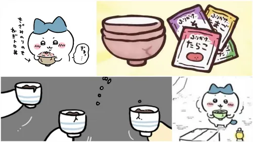

하치와레 소개
하치와레는 먼작귀의 주요 캐릭터 중 하나로, 주인공 치이카와의 단짝친구입니다. 치이카와와 함께 책을 읽으며 대화하던 것이 첫 등장했습니다.
이름의 유래는 일본에서 한자 '八' 모양의 얼굴 무늬를 가진 턱시도 고양이를 '八割れ(하치와레)'라고 부르는 것에서 따왔습니다.
쓰는 무기는 파란 사스마타이며, 치이카와가 보고 따라 샀습니다. 카니와도 색만 다르고 똑같은 것으로, 섬 합숙 에피소드에서 본인에게 직접 언급했습니다.
가끔 혀를 내밀고 있다. 그러나 본인은 의식하지 못하고 있으며, 치이카와가 알려줄 때까지 전혀 몰랐습니다. 무언가에 집중할 때 자주 혀를 내민다.